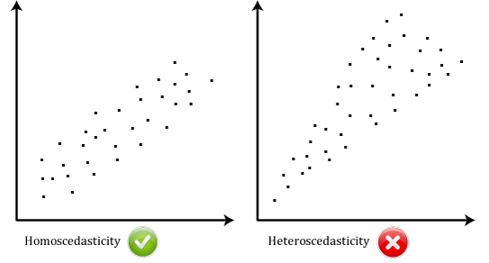

Week 12
The Classical Linear Model
Importance of the Classical Linear Model
Small data still matters.
- Experimental data can be expensive
- Data may be aggregated - Policy regions
- Markets
- Prior studies
- Some units of observation are limited - Space shuttle launches
- Viral pandemics
- Elections
- Why are we devoting this unit to the classical linear model?
- Well, there’s one big reason and a bunch of small ones.
- The big reason is that, for all the talk about big data, small data still matters
- As a data scientist, you are very likely to work with small data at some point in your career. There’s a few reasons for that…
Why Can’t we use the Large-Sample Model?
- Coefficients may have high bias
- Standard error estimators have high variance
- Standard error estimates may have high bias
\(\implies\) Our coefficients could be far from the truth
\(\implies\) We can’t trust our estimates of uncertainty
- First, let’s clearly say why we can’t just use the large-sample model for small data
- In the large sample model, we rely on consistency and asymptotic normality, but those require a large n.
- For small n, our coefficients naturally have higher variance, but they may also have high bias
- That’s a problem because standard errors only account for variance, they don’t recognize bias
- Furthermore, we have to estimate our standard errors, but those use consistent estimators.
- In small data, our standard error estimates have high variance, and they might be very biased as well.
- So we’re off but our instruments for understanding how far off we are don’t work!
Twenty (Noisy) Questions
- Is it in a school?
- Is it bigger than a breadbox?
- Is it red?
- It is alive?
- Imagine a noisy game of 20 questions.
- I’m thinking of a secret object. You’re trying to guess it by asking yes or no questions.
- This is a noisy game, so my answers can be wrong with some probability - say 10
- To represent small data, imagine that you get just 5 questions.
- To represent biased coefficients, say that I can strategically choose when to give the wrong answer to try to direct you to a false target.
- To represent biased standard errors, imagine that you have no idea what fraction of the time I’m allowed to lie.
- The game doesn’t sound like very much fun, does it? This captures the problems that our asymptotic machinery faces in a small sample.
More assumptions
\(\downarrow\)
Fewer unknowns
\(\downarrow\)
More mileage from data
- So how do fix this? The super short answer is this: we need more assumptions.
- More assumptions means fewer unknowns. Which means that we can get more mileage out of our data.
The Classical Linear Model (CLM)
Key assumption: \(f_{Y|X}\) belongs to a parametric family.
Goal: Identify which member is the true one.
- The enlarged set of assumptions we’re talking about is known as the Classical Linear Model.
- We’re going to assume that the conditional distribution of
- Then our job is much smaller. all we need to do is figure out which member of the family is the true one.
- The CLM Is extremely popular. It’s the traditional starting point for linear regression, and the centerpiece of most textbooks in statistics, econometrics, and machine learning.
- It’s also a basis for other statistical models. So it’s very important to know this model. let’s get started..
Unit Plan
Plan for the Week
Three sections:
Plan for the Week (cont’d)
At the end of this week, you will be able to:
- Understand statistical inference based on the classical linear model
- Use regression diagnostics to assess all CLM assumptions
- Understand how to leverage transformations to help meet CLM assumptions
Part 1: Importance of the Classical Linear Model
Reading: The CLM Assumptions
Reading: The CLM Assumptions
Read Foundations of Agnostic Statistics Chapter 5 through section 5.1.1.
Pay attention to the discussion of the disturbance, and notice how the last paragraph seems to imply a particular causal model.
The CLM Assumptions, Part 1
CLM Assumption 1
I.I.D. Data. \((Y_1, \boldsymbol{X}_1), (Y_2, \boldsymbol{X}_2),...,(Y_n, \boldsymbol{X}_n)\) are independent and identically distributed.
Common violations:
Clusters
Dependencies among family members, competitors, geographic neighbors
Dependencies from one time period to the next
We denote a representative datapoint as \((Y, \boldsymbol{X})\) .
- First, just like before, we need an assumption of I.I.D. iid tells us that each datapoint is 100
- The model is this: you have a joint distribution and you draw a datapoint. then you reset, totally clear memory and draw the next datapoint.
- Real data generating processes very often don’t look like that. Here are some of the most common violations
- Some of these violations you can test for and model the dependency. for example, if you know what the clusters are, you can build them into a hierarchical model. but in general, you may now even know where all the dependencies are and have no way to model them.
- We usually don’t get a perfectly random sample. That usually doesn’t mean you throw away your data, but you should always assess the assumption honestly. and you may have to be skeptical about your standard errors.
- Since we assume our data is iid, we can drop the subscript, and just discuss a representative random vector, (Y,X).
CLM Assumption 2
No Perfect Collinearity. \(\E[X^TX]\) exists and is invertible.
\(\implies\) No \(X_i\) can be written as a linear combination of the other \(X\) ’s.
- First, the mathematically precise definition…
- What does this mean? For this to be invertible, that tells us that no x variable can be written as an exact linear combination of the other X’s. It has to have some unique variation.
- That makes sense because we know ols works on unique variation. If we combine this assumption with the next one, we can prove that a unique BLP exists.
Perfect Collinearity Example 1
\(\widehat{Price} = .5\ Donuts + 0.0\ Dozens\)
or
\(\widehat{Price} = 0.0\ Donuts + 6.0\ Dozens\)
- Here’s an example to help understand why we need this assumption
- You regress the price on both number of donuts and number of dozens of donuts.
- it’s 50 cents per donut, so you can write the price as 50 cents times number of donuts
- But you can also write it as 6 dollars times number of dozens.
- Both are equivalent for predicting the price - this problem doesn’t affect prediction.
- But you can’t estimate coefficients, because they aren’t uniquely defined.
Perfect Collinearity Example 2
\(\widehat{Voters} = 200\ Positive\_Ads + 100\ Negative\_Ads + 0\ Total\_Ads\)
or
\(\widehat{Voters} = 100\ Positive\_Ads + 0\ Negative\_Ads + 100\ Total\_Ads\)
- Here’s another example, to show you that multicollinearity isn’t always about pairs of variables, it might be more variables
- Here you have a regression with number of positive ads, number of negative ads, and the total number of ads.
- Once again, you can find multiple ways to write the same model.
The CLM Assumptions, Part 2
CLM Assumption 3
Linear Conditional Expectation. The conditional expectation of \(Y\) given \(\boldsymbol{X}\) exists and has the linear form,
\(\E[Y|\boldsymbol{X}=\bs x]= \boldsymbol{x \beta}\)
Where \(\boldsymbol{\beta}\) is a vector of parameters, for all \(\boldsymbol{x} \in \text{Supp}[\boldsymbol{X}]\)
- Next, we have linear conditional expectation.
- This is quite strong. It’s telling us that our joint distribution is essentially linear, although possible distributions around that line can still look very different.
- This makes the regression problem much easier - we know we have a line, we just need to figure out which line.
CLM Assumption 4
Homoskedasticity. Letting \(\epsilon = Y - \boldsymbol{X \beta}\) , the conditional variance \(\V[\epsilon | \boldsymbol{X}]\) is a constant, which we label \(\sigma^2\) .
- We already assumed we have a linear CEF, now we also need to know that the spread around that line is constant.
- homo = same, skedasis = Greek for scattering
Understanding Homoskedasticity

- Here’s a picture to show you what this assumption looks like.
- To understand conditional variance, choose an X and then look at how wide the distribution is along the Y-axis.
- On the left, we have an example of homoskedasticity - for any X, the conditional variance in Y looks the same.
- On the right, we have heteroskedasticity, the conditional variance seems to increase towards the right.
- This will complicate the behavior of our coefficients in a small sample, so we require homoskedasticity in the CLM.
CLM Assumption 5
Normally Distributed Errors. Letting \(\epsilon = Y - \boldsymbol{X \beta}\) , the conditional distribution of \(\epsilon\) given \(\boldsymbol{X} = \boldsymbol{x}\) is normal.
- Given previous assumptions, \(\epsilon \sim N(0, \sigma^2)\) .
Common CLM Errors
NOT CLM Assumptions:
- Normality of \(X_i\) or \(Y\)
- No outliers
- No high Collinearity
- Finally, it’s worth mentioning some common mistakes These are assumptions that are NOT part of the CLM.
CLM Model Summary
- I.I.D. Data
- No Perfect Collinearity
- Linear Conditional Expectation
- Homoskedastic Errors
- Normally Distributed Errors
Part 2: Properties of the CLM
OLS is Unbiased under the CLM
OLS is Unbiased under the CLM
Assume CLM 1-3.
OLS is Unbiased under the CLM
Assume CLM 1-3.
\(\E[Y|\bs X] = \bs X \bs \beta\) \[\begin{align*}
\E[\bs Y | \X] &= \left[ \begin{matrix} \E[Y_1|\X] \\ \E[Y_2|\X] \\ \vdots \\ \E[Y_n| \X] \end{matrix} \right]
= \left[ \begin{matrix} X_1 \bs \beta \\ X_2 \bs \beta\\ \vdots \\ X_n \bs \beta \end{matrix} \right]
= \X \bs \beta
\end{align*}\] \[\begin{align*}
\E[\boldsymbol{ \hat \beta}] &= \E[(\X^T\X)^{-1}\X^T\boldsymbol{Y}] = \E\Big[ \E[(\X^T\X)^{-1}\X^T\boldsymbol{Y} | \X] \Big] \\
&= \E\Big[ (\X^T\X)^{-1}\X^T \E[ \boldsymbol{Y} | \X] \Big] = \E\Big[ (\X^T\X)^{-1}\X^T \X \bs \beta \Big] \\
&= \E[\bs \beta] = \bs \beta
\end{align*}\]
- First, we need to write CLM 3 in matrix form. CLM 3 says that a single data point is expected to fall on the line, and we need to say that all the points fall on the line.
- So you can see that the coefficients are unbiased, and for this we only needed CLM 1-3. The one strong assumption is linear conditional expectation.
- This results is important, because it eliminates one way that our estimates can be wrong. There’s no bias at any sample size. Next, we need a way to estimate variance in a small sample, and then we can start to understand our results.
Classical Standard Errors
Standard Errors under the CLM
Two choices:
- Robust Standard Errors
- Classical Standard Errors
- We already know that
- Let’s start with the most fundamental metric of uncertainty: standard errors.
- When working with the CLM, people use two different types of standard errors.
- You’ve already seen robust standard errros, let’s defines what classical standard errors are, and then talk about which of these you should use.
Classical Standard Errors: Intuition
Fewer unknowns \(\implies\) more accurate estimates - All data points share a common variance \(\V[Y_i] = \sigma^2\) . - Leverage all data points to estimate a single number.
- The basic idea is that under the CLM, we have fewer unknowns, so we should be able to use our data to get more accuracy
- In particular, each datapoint has the same variance. Estimating n different variances would be hard.
- since there’s one variance, we can use every single datapoint to get more information about it
- Here’s a data point that’s high - that’s a signal that variance is high.
- We can use a good estimate for error variance to compute the variance of the betas.
A Simple Equation for Sampling Variance
Under CLM 1-4, the variance of the OLS coefficients is given by,
$\V[ \boldsymbol{ \hat \beta} ] = \sigma^2 \E[ \boldsymbol{X}^T\boldsymbol{X} ]^{-1}$- Let me remind you that the general equation for variance of betas is really complicated
- But under homoskedasticity, we were able to simplify it a lot.
- Here’s the theorem we saw earlier. we just multiply the error variance by this matrix.
- How do we get an estimator for this. we just plug in sample analogues for variance and for the matrix
The classical variance estimator is \(\widehat{\V}_C[\boldsymbol{ \hat \beta}] = \hat \sigma^2 ( \X^T\X) ^{-1}\) Where \(\hat \sigma^2\) is the residual variance, given by \(\hat \sigma^2 = \frac{1}{n-k-1} \sum_{i=1}^n \hat \epsilon_i^2\)
- Consistent under CLM 1-4
- Unbiased if \(\X\) is nonrandom.
- This is what we call classical standard errors.
- For us, these are consistent, but textbooks that use stronger assumptions list them as unbiased.
Should you use Classical Standard Errors?
YES- Classical standard errors are efficient. - If you transform variables to fit CLM, want to take advantage of extra precision. - t-Tests, other Wald tests are based on classical standard errors.
NO- Without homoskedasticity, classical standard errors are inconsistent - Hard to assess homoskedasticity in small samples
Sampling Distributions under the CLM
CLM Sampling Distributions
Under CLM 1-5, \(\boldsymbol{\hat \beta}\) is distributed multivariate normal.
\(\boldsymbol{ \hat \beta} = \boldsymbol{\beta} + (\X^T\X)^{-1} \X^T\boldsymbol{\epsilon}\) - Each \(\hat{\beta}_i\) is normal - Any linear combination (e.g. \(\hat{\beta}_i - \hat{\beta}_j\) ) is normal
- To do more precise inference, including confidence intervals and tests, we have to know what the sampling distribution of our beta hats is.
- We need the full CLM for this. The result is that under CLM 1-5, our beta hats are normal.
- Here’s how you know. remember this equation for beta hat…
- \(\epsilon\)
Testing Coefficients under the CLM
Assume CLM 1-5 and the null hypothesis:
\(H_0: \beta_i = \mu_0\) Let \(\hat \sigma_i\) be the classical standard error for \(\hat \beta_i\). \(t = \frac{\hat \beta_i - \mu_0}{\hat \sigma_i}\) is distributed \(T\) with \(n-k -1\) degrees of freedom.
- Now that we know that our sampling distribution is normal, we can derive a t-statistic
- The setup is very similar to a classic t-test for one variable.
- We have a null hypothesis, which is usually that our
- We standardize, by subtracting the hypothesized mean, and dividing by the standard error.
- Since we’re estimating the standard error, the statistic doesn’t follow a z-distribution, it follows a t-distribution.
- By the way, the degrees of freedom is n-k, we lose a degree of freedom for every beta we estimate.
- So this is why we always run t-tests instead of z-tests in a regression. T-tests are accurate in small samples under the CLM. Of course, your statistical software will run these tests automatically.
Take-Aways
Under CLM 1-5
- t-tests based on classical standard errors are valid
- Confidence intervals based on classical standard errors are valid
Efficiency Theorems for OLS
OLS and Alternative Estimators
OLS is one of many possible estimators for \(\boldsymbol{\beta}\) :
- Should we weight some datapoints more than others?
- What is the right form for the cost function?
- Should we reduce influence of outliers?
- I want to talk about efficiency, but first, let me remind you that there are many possible estimators out there.
- OLS is simple and elegant, but we should remember that it’s just one choice out of many
- If you take a step back and think about how you would design an algorithm to estimate the true betas, here are a few things you might consider.
- Should we weight some datapoints more than others - maybe those that appear least noisy…
- If you think about these choices, you could write different algorithms to take the place of ols - is that a good idea?
Understanding Efficiency
Desirable estimator properties
- Unbiased: \(\E[\boldsymbol{\hat \beta}] = \E[\boldsymbol{ \beta}]\)
- Efficient: \(\V[\boldsymbol{\hat \beta}]\) is small.
Efficiency: More precision with less data
- Is the OLS estimator efficient?
- When you’re comparing estimators, it’s good to go back and review the properties that we want estimators to have. Here’s two…
- One is being unbiased, and we know ols is unbiased
- Another is what Statisticians call efficiency. An estimator is efficient if it has low variance.
- That really means efficient with data, getting more precision with less data.
- your standard errors will be small, you’ll have good precision, your hypothesis tests will be powerful…
- Is the OLS estimator efficient? There are some famous theorems about this. I’m going to give you a very brief overview of two.
Under CLM 1-4, out of all estimators that are 1. Unbiased 2. Linear (of the form \(\mathbb{M} \boldsymbol{Y}\) for some random matrix \(\mathbb{M}\) )
OLS has the minimum variance.
Remember the phrase: OLS is BLUE
- Best
- Linear
- Unbiased
- Estimator
- First, we have the famous Gauss-Markov theorem. These guys looked at all estimators that are unbiased and also linear, meaning they can be written as some matrix times
- You need the first 4 CLM assumptions for this to be true, including homoskedasticity. Without homoskedasticity, a different algorithm, called weighted least squares is more efficient.
Under CLM 1-5, out of all estimators that are 1. Unbiased
OLS has the minimum variance.
- There’s also the Rao-Blackwell theorem, that says that under all 5 CLM assumptions, if you look at unbiased estimators, ols has the minimum variance.
- You can take these as evidence that ols is efficient. As a data scientist, you probably don’t need more reasons to use ols, you just use it. But this is a peek at how statisticians think about estimators that can help you as you learn more statistics.
Reading Assignment
Reading Assignment
Make sure you remember the material in section 5.2 through page 189.
Then read the last paragraph of page 189 through 191.
Maximum Likelihood Estimation of the CLM
Likelihood
Likelihood: A function that takes values for a model’s parameter’s as inputs, and yields the probability of the (fixed) data as output.
Maximum Likelihood Estimators
If the model is true: - Consistent and asymptotically efficient.
If the model is not true: - Consistently estimates the parameters that minimize KL divergence.
Maximum Likelihood Estimation of the CLM
\[\begin{align*} \text{Data } \boldsymbol{Y}, \X. &\text{ Find ML estimator for CLM}\\ L(b,s | \boldsymbol{Y}, \X) &= \prod_{i=1}^n \phi\big( Y_i, (\boldsymbol{X_ib},s^2) \big) \\ \ln(L) &= \ln \prod_{i=1}^n \phi\big( ... \big) = \sum_{i=1}^n \ln \phi( ...) \\ &= \sum_{i=1}^n ln \frac{1}{s \sqrt{2 \pi}}e^{\frac{-(Y_i - \boldsymbol{X_ib})^2}{2s^2}} \\ &= \sum_{i=1}^n \Bigg[ ln \frac{1}{s \sqrt{2 \pi}} - \frac{(Y_i - \boldsymbol{X_ib})^2}{2s^2} \Bigg] \\ \text{argmin} \ln(L) &= \text{argmin} \sum_{i=1}^n (Y_i - \boldsymbol{X_ib})^2. \qquad \boldsymbol{\beta_{ML} }= \boldsymbol{\beta_{OLS}} \end{align*}\]
- Conclusion: We get exactly the ols estimator. In this case, the ML estimator and the ols estimator are the same. This is another way that you can motivate the ols algorithm.
- By the way, remember one cool fact about ML estimators. even if the model is not true, ML will consistently find the model that’s as close as possible to the true distribution, where close is defined as KL-divergence. So that means that even if the CLM does hold, we’re estimating betas that give as good as approximation as possible.
- We usually prefer to use as few assumptions as possible, so this isn’t our favorite way to think about ols. But we want you to see it from this perspective, so you can connect it to the models you’ll see in ML or in your advanced statistics courses.
Can We Believe the CLM?
All models are wrong, but some are useful. George Box
- If we assume the CLM, then we get a lot of great statistical guarantees - guarantees that let us work with small samples.
- But assumptions are not true because we want them to be true.
- the CLM in particular is a parametric model - a very strict set of assumptions. Can we really believe it?
- Clearly the textbook authors are skeptics. The repeatedly say that you can’t take the CLM literally.
- Alex and I think they make a good point. Of course you should be skeptical of any model. No model is actually TRUE - it’s a model. What’s important is to examine the model and see if it reminds us of the real world, or if we can find aspects of the real world that run counter to model assumptions
- But when you see strong parametric assumptions, there’s not enough flexibility in the model to account for the messiness we see in the world.
The CLM Assumptions
- I.I.D. Data
- No Perfect Collinearity
- Linear Conditional Expectation
- Homoskedastic Errors
- Normally Distributed Errors
- So we think that you should indeed be skeptical of the CLM. But it’s important to qualify that statement. First, we shouldn’t lump the entire CLM in together
- We provided 5 assumptions. and as you go from top to bottom, adding one at a time, the model gets more restrictive
- Remember that some guarantees require all 5 assumptions, and some don’t. unbiased coefficients only require 1-3. and you can usually transform your data so that the linear conditional expectation assumption looks plausible.
- t-Tests require all 5 assumptions, and we think that you should definitely be more skeptical about whether they’re valid.
CLM as a Maximum Likelihood Estimator
The OLS estimator is consistent for the parameter values that minimize KL divergence between the true distribution and the model distribution.
- Another important point that the authors make, is that even if the CLM is not true, it’s a max likelihood estimator.
- So that means that it consistently estimates a distribution that’s as close to the true distribution as possible.
- So even if the CLM is false, OLS doesn’t totally give up. It still tries to get as close as possible. Of course, we need a somewhat large n for this to be meaningful.
Can We Believe the CLM?
All models are wrong; they are, at best, approximations of reality. But, even without assuming that they are exactly true, when employed and interpreted correctly, they can nonetheless be useful for obtaining estimates of features of probability distributions.
- Aronow and Miller
Assessing the CLM assumptions - Software Demo
This one will be a screenshare using R Studio